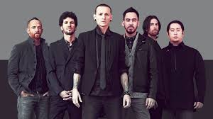

História da Banda
Linkin Park é uma banda estadunidense de rock alternativo, Rapcore e Nu metal, formada em 1996 na cidade de Agoura Hills, Califórnia. Seu primeiro nome foi Xero.
A banda é composta por Mike Shinoda (vocalista), Brad Delson (guitarra), Dave Farrell (baixista), Joe Hahn (DJ), Rob Bourdon (baterista) e Chester Bennington (vocalista).
Chester Bennington, natural do Arizona, foi apresentado à banda por um advogado que soube que eles estavam à procura de um vocalista.
Com a chegada de Chester em 1999, a banda começou a ganhar destaque, mudando seu nome para Hybrid Theory e gravando seu álbum de estreia, que vendeu mais de 24 milhões de cópias e ganhou disco de diamante.
A banda adotou o nome Linkin Park em homenagem ao Lincoln Park, um espaço público, e para evitar problemas com um domínio de internet existente. Após assinar com a Warner Bros, a banda alcançou reconhecimento mundial.
Linkin Park lançou seu álbum "Hybrid Theory" em 2000, que se tornou o mais vendido de 2001, recebendo um Grammy de Melhor Performance e várias indicações. O segundo álbum, "Meteora", também foi um sucesso, alcançando o topo da Billboard 200.
O terceiro álbum, "Minutes to Midnight", foi o mais vendido em 2007. Em 2010, lançaram "A Thousand Suns", e em 2014, "The Hunting Party", que trouxe de volta diversos gêneros dos trabalhos anteriores.
Em 2017, Chester Bennington faleceu, impactando profundamente a banda e seus fãs. Em 2023, lançaram a música "Lost", uma faixa inédita que faz parte do relançamento do álbum **"Meteora"**.